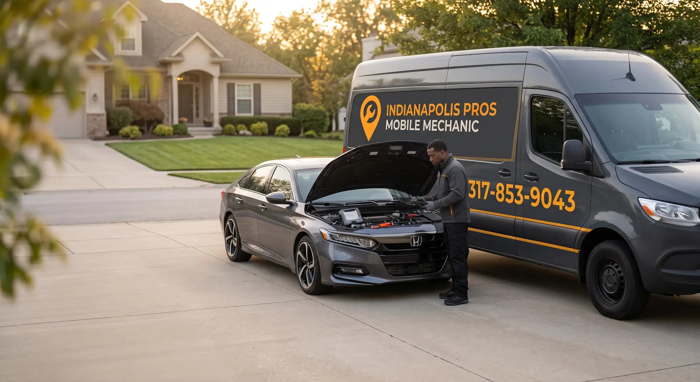
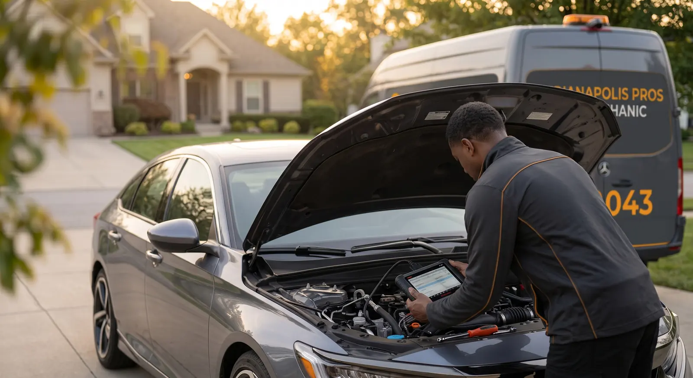
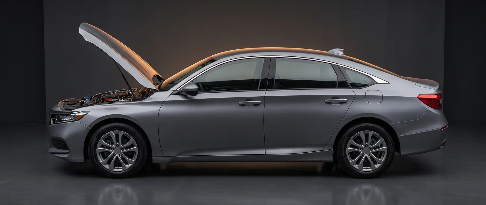
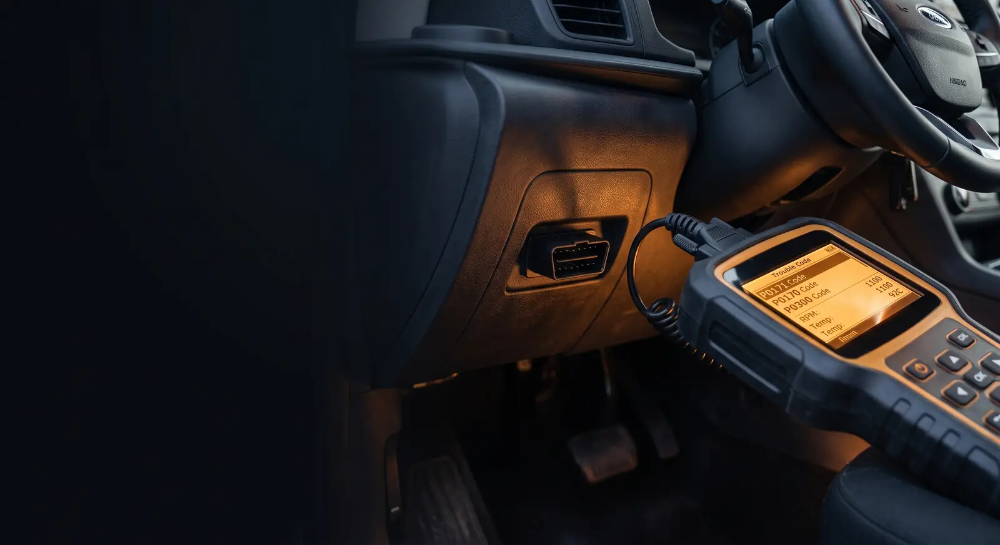

01
HOME
Service at your driveway or residence.

Professional mobile diagnostics, maintenance and repair at your home, workplace, parking lot or roadside location.
If the vehicle won't start, a warning light came on, or you simply need maintenance, you don't necessarily need a tow or a shop appointment.
Indianapolis Pros Mobile Mechanic brings the service to the vehicle. Home driveway. Workplace. Parking lot. Roadside location.
SEE HOW IT WORKS →
Service at your driveway or residence.
Don't lose your day waiting at a repair shop.
When your vehicle stops where it is, start there.
Start with the problem you're experiencing. We'll help identify what needs attention and what can be handled on-site.
TAP A GLOWING POINT ON THE CAR, OR PICK A SYMPTOM BELOW

Typical checks only, not a diagnosis or a quote. We confirm what's wrong in person.

Not every warning light means the same thing—and replacing parts without finding the cause can get expensive fast.
We come to the vehicle, diagnose the problem, explain what we find, and help you understand your options before you decide what to do next.
REQUEST A DIAGNOSTIC ↗Describe what's happening with the vehicle.
Home, work, parking lot or roadside.
Bring the service to the vehicle.
Find the cause and explain what we found.
When the job is practical on-site, get it handled.
Hand tools, a diagnostic scanner and electrical testing gear ride along, so many jobs can be handled right where your vehicle is parked.
★★★★★“Fast response and convenient service right where the vehicle was.”
★★★★★“Very knowledgeable and explained what was going on with the vehicle.”
★★★★★“Being able to have the mechanic come to me made the whole situation easier.”
Review presentation is intentionally concise in this first build; final launch copy should use exact approved Google review text and attribution.
Indianapolis and surrounding communities. Service coverage should be confirmed with the business before the final location list is published.
Add the owner's name, a real photo and two honest sentences, then remove the hidden attribute.
Don't automatically pay for a tow. Call first and tell us what's happening.
For the first production release, the primary conversion path is phone-first. A full request form can be connected once the business's preferred intake workflow is confirmed.